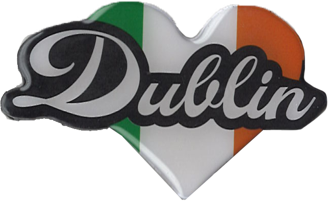
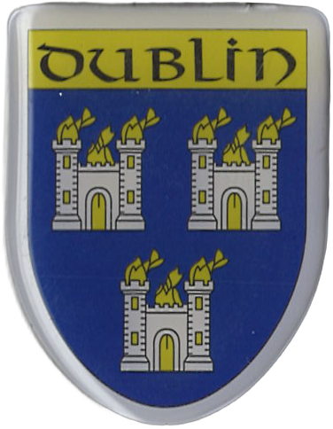
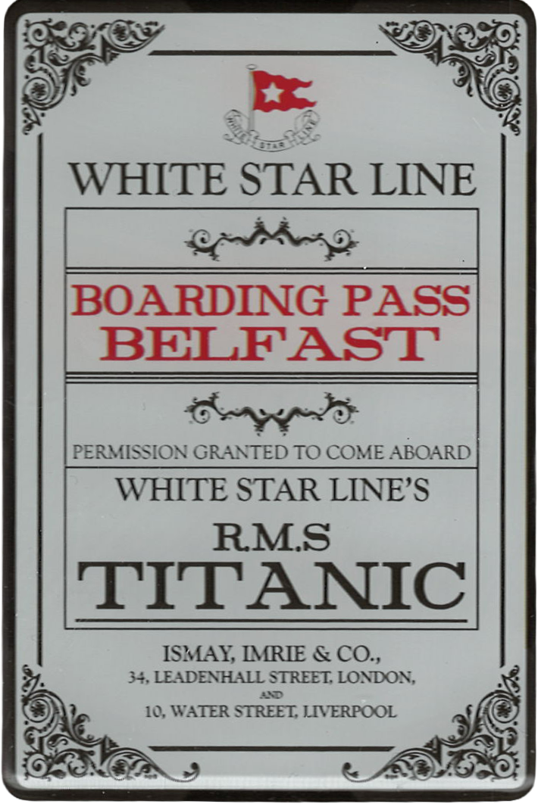
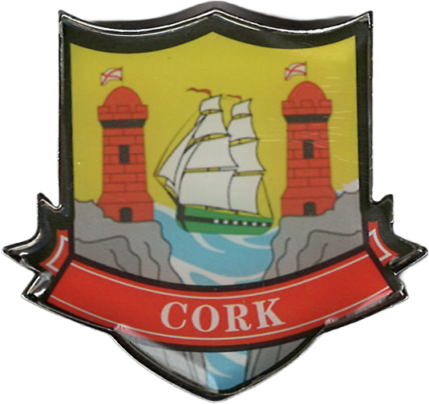
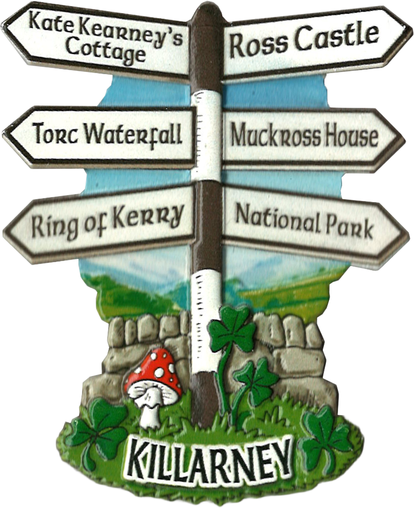
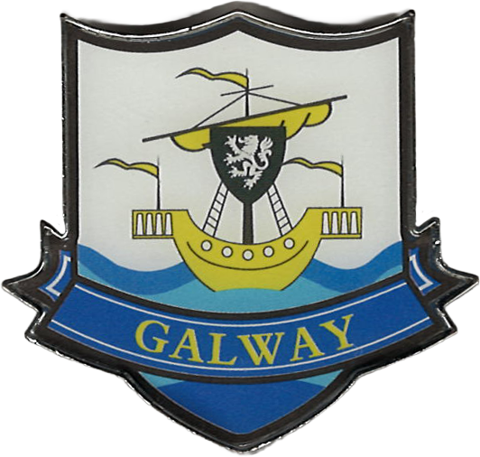
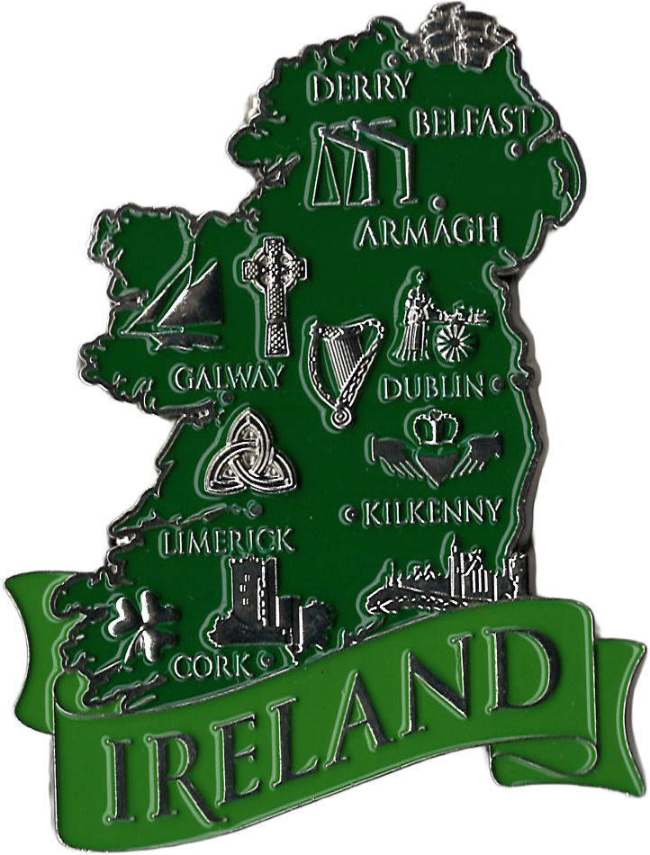

I picked up this magnet at Disney World in Florida from the TRON Lightcycle / Run ride.
The ride had opened the previous year (2023) and was the one I had been most excited for on this trip,
since Tron: Legacy is one of my favorite movies!
destination
Ireland - Dublin

Dublin Heart
07/06/2024
Purchased in a pack of four in Dublin, these magnets are generic Dublin symbols.
Trinity College
I visited Trinity College and explored The Old Library and the Book of Kells.
The Old Library, built in the 18th century, houses the famous Long Room with 200,000 books,
though it was completely empty during my visit because the books were removed for a conservation project.
The Book of Kells is a 9th-century gospel manuscript. I wasn’t very interested in it at the time,
but I would definitely go back to see it if I return to Dublin.
Ireland Harp

Dublin Coat of Arms
destination
Northern Ireland - Belfast

Titanic Boarding Pass
07/07/2024
The Titanic Belfast museum stands on the site of the former Harland & Wolff shipyard, where the RMS Titanic was built. This magnet is a replica of a boarding ticket for the Titanic.
On the same day, I also visited the Giant's Causeway and Dunluce Castle, a 16th-century castle ruin that appeared in Game of Thrones!
destination
Ireland - Cork

Cork Coat of Arms
07/08/2024
Traveling from Dublin to Cork, I stopped at the Rock of Cashel, a historic site with medieval architecture. In Cork, I visited Saint Fin Barre's Cathedral, a Gothic Revival cathedral.
destination
Ireland - Midleton
Jameson Distillery
Date: 07/09/2024
I visited the Old Midleton Distillery and took the Midleton Distillery tour. Founded in 1825, the distillery offered a look into Ireland’s whiskey-making heritage, including the old mill and the production process.
Afterwards, we passed through Cobh to see the Titanic Memorial Garden, commemorating the town as the Titanic's last stop in Queenstown before its journey to America.
The day ended at Blarney Castle, where I explored the beautiful gardens, though I didn’t kiss the Blarney Stone.
destination
Ireland - Killarney

Killarney
07/10/2024
Drove the Ring of Kerry, starting with a kayak ride on Lough Leane and a stop at Innisfallen Island to see the ruins of an old monastery.
Took a ferry to Valentia Island, explored the Kerry Cliffs, and saw the Skellig Islands, which were featured in a Star Wars film.
07/11/2024
Explored the Dingle Peninsula, starting with a walk along Inch Beach and a visit to the Blascaod Centre, a museum about a local fishing community.
Stopped at the Gallarus Oratory, wandered through the town of Dingle, and drove on the Connor Pass.
destination
Ireland - Galway

Galway Coat of Arms
07/12/2024
Traveled from Killarney to Galway, stopping at Torc Waterfall and Torc Mountain.
Continued to see the Cliffs of Moher before ariving in Galway.
07/13/2024
I visited the Kilmacduagh ruined Abbey, a monastery founded in the 7th century. I also picked up a Claddagh ring, a symbolic Irish design.
destination
Ireland

Map of Ireland
Purchased as a memento of my road trip around Ireland, celebrating all the places I explored along the way.